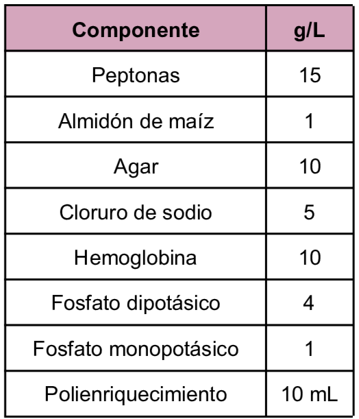
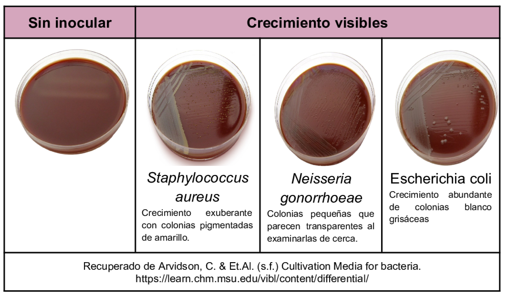

Este medio se obtiene calentando la sangre antes de añadirla al medio base. Derivado de su contenido de hemoglobina, que aporta al medio un importante elemento para el crecimiento: el factor X o hemina termoestable. Es un medio que se usa principalmente para el aislamiento de
Neisserias (gonococos y meningococos) y Haemophilus,
pero de igual forma pueden crecer muchos otros microorganismos exigentes.
Composición

pH a 25°C 7.2±0.2
Resultados Posibles
Se puede esperar un crecimiento de tipo variado dependiendo del microorganismo inoculado, presentando a continuación ejemplos del crecimiento de algunas bacterias.

Referencias
Laborclin (2019) Agar Chocolate. https://cdn.media.interlabdist.com.br/uploads/2021/01/540158-%E2%80%93-CHOCOLATE-ENRIQ.-AGAR-20mL-PL90X15-10PL-dez-2019.pdf
MCD Lab (2025) Agar Sangre/Agar Chocolate. https://mcd.com.mx/index.php?controller=attachment&id_attachment=26761